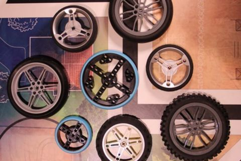

Hi, I'm Tom from team TövisASAP FLL from Hungary. I am in FLL since 2014, season World Class. Sharing is pretty important because if more people know what we know, more teams can be successful. So that's why I want to share our experiences.
In this post, my goal is to introduce you to the new Spike Prime wheels in action as we have used it in the competition and I wanted to share my team's experiences to help you in the next years by helping you choose the right wheel. I am publishing this article now because most teams have ended their season already and will be starting to plan and think for the next season.
Let me first introduce the big wheel's physical properties: Its diameter is 88 millimeters and it's solid so it's unpressable and very massive. It's big enough because of its kinda the same size as the white 81.6mm wheel which a lot of teams used but it's way better than it. There is no damping/suspension effect here, that can be dangerous as the useful cargo can more easily just bump out but it's good because the equipment is always in exact contact with the models. In this article, I will concentrate on the big wheel because that's what we used in our robot, but if you all want am happy to write on the small wheel too as a fellow team, from Megyeri school used these to compete.
Yes, that's a key question. Of course, you can now buy them from LEGO with the expansion set or maybe from bricklink. Back in 2019, we got them from Bricks & Pieces (Lego's replacement part store). We knew its part number from a post on LEGO SPIKE Community from @Arvind Seshan back in 2019. Its price was somewhere at 2.5 euros. Here is how you should find it: "Lego Spike Prime Large Wheel 88 X 14 Integral Medium Azure Tire (49295)"
We've started this year with the 81.8mm (2902-2903) motorcycle wheel and we later changed to this 88mm (49295) wheel. In previous years we have used the futuristic 70mm lego bike wheel (8430), the 81.8mm wheel that I mentioned before, the basic Mindstorms wheel (32019) and also the big one with a diameter of 100.6mm (11957-88517). We could pass in this wheel to our robot perfectly it meant no problems and it didn't touch anything. It's easily fixable with biscuits (and of course there's a lot of potential in every Spike Prime part and they're amazing but this is just about the big wheel).
The wheels logic itself is way better than the older ones because it is based on a four-way (90 degrees) logic and not on six-way (60 degrees) and it's a way better recreating of the whole wheel mechanism because you can easily transfer in 90 degrees and not in 60, so it is way more practical than the previous wheels. You can easily attach this wheel by 5 points so it would and should be robust and massive if you support this with a beam from each side.
Furthermore, I have prepared key information on the wheels' properties which might be useful if you want to use this wheel not just build a nice robot that stands on the shelf. It is good because this wheel won't be stuck in the cables. After all, its surface is flat and smooth so this is good if you or your team isn't so good at cable management.
If your team hasn't got stall detection than this wheel will fit perfectly for you because its surface is smooth and its nearly frictionless and even if the robot has stuck into the wall or a model its wheel will keep spinning, so it won't prevent the whole program from running. Nevertheless, you can't use it with stall detection because it sticks/stalls quite rarely. When it is really blocked by something and if you use it with a very sensitive detection it has a chance to stop when it goes slowly. So you should better not use stall detection - only if you are sure that it won't stop (so when you only go fast :D) but I don't think it's worth it.
You SHOULD use these features because the wheel's surface, as I mentioned earlier, has minor friction so if you immediately start with high speed the wheel will slip quite much and it won't be accurate and it will go less distance overall. The same applies for the decelerating and stopping. So you shall definitely use these if you or your team is inexperienced in this feel free to turn to me - if you need help with any features that I will describe or have already described.
Of course, you should always use this because it is an important feature that can help in many situations, but you should use gyro correction especially with these wheels. I mentioned earlier that the wheel can slip easily and that's the reason why it is so important to use gyro correction with these wheels because it can slip on any little bulge and will become inaccurate.
It's important to mention that the wheel will become very dirty, pretty fast. Therefore do some cleaning. The good news is that you can easily clear the wheels with a degreasing agent and a simple wipe. But you should clear the wheels as soon as you see it becoming dirty because it makes it unpredictably inaccurate.
You could consider placing weights above the wheels because of the minor friction that I mentioned earlier can be increased. Trust me it will help a lot.
So overall you should place weights above the wheels because without them it will slip on the mat but with them, it becomes the most precise wheel I've ever known and you always have to clear the wheels as soon as you see it becoming dirty.
Tire/Wheel wear - This wheel is in mint condition after one year/season of very rough usage so it'll be good for anyone. This was quite different than the small motorcycle, big motorcycle and the aluminum wheels we have used in previous years.
I recommend this wheel to any team who has already some experience in programming because you can't really use this without proper acceleration. I recommend this wheel because it is really precise and almost good for every robot I have seen and it is big enough so you can achieve good speed vs accuracy reaching your destination quickly. I enjoyed using this wheel this year because it is the best wheel I have ever used as it is really precise and really fast and also it is very durable. I don't really recommend this kind of wheel to a real novice team because it isn't so easy to use, but I do recommend the small new azure one.
And also I want to thank LEGO Education because they made a really good decision by placing the small wheel to the base kit and the big to the expansion.
Have fun, hope you enjoyed my review. Feel free to comment or ask, would be more than interested in your experience, thoughts or designs.